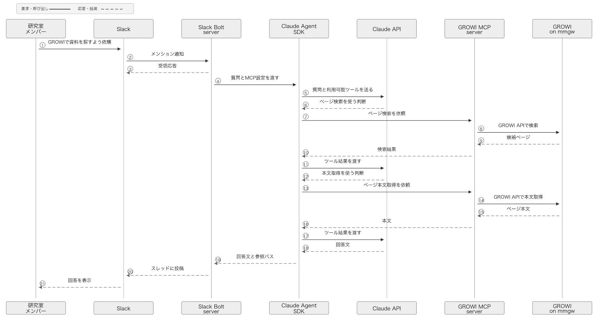

研究室の社内wikiを自然文で検索して答えるSlack Bot
筑波大学 システム情報系 三目研究室（リサーチアシスタント）／2024年4月 – 現在
研究室のwikiにはMTGの議事録や、コード開発に必要なライブラリに関する知見、事務手続きに関する情報が溜まっているが、検索性が低く、自分が必要な記事に到達するのに長いと5分以上かかるという課題があった。
この課題に対し、Slack経由で自然言語の検索クエリを投げ、LLMを用いてwikiの記事を検索させて、根拠付きで知りたい情報を回答させる検索Botを作成し、情報検索にかかる時間を短縮した。
特に気を配ったのは、社内文書を社外のLLMへ渡す構成になる点である。当初は各メンバーに検索ツールを配る案を検討していたが、一人ひとりがAPIキーを持つと、1本の漏洩で全記事が外部から読めてしまうため取りやめ、Bot1つに集約した。Botが使う権限は読み取り専用に限定し、認証情報はBotの実行主体だけが読める場所へ隔離している。あわせて、背景を知らないSlack管理者でも設定から停止まで行えるよう、手順書を用意した。
